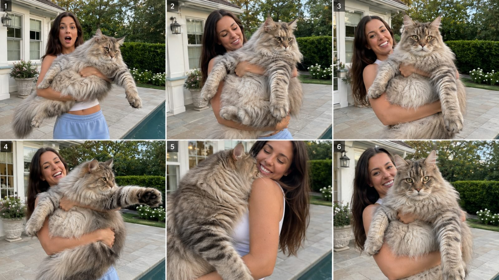

Back to all prompts
GIANT ANIMAL SHOW TIME
Storyboard & Reference

Download Reference{kind=link}
# ULTRA MASTER PROMPT — GIANT ANIMAL + BEAUTIFUL AMERICAN INFLUENCER VIRAL SYSTEM
Use this as a reusable Seedance 2.5 master prompt. Replace the placeholders with your chosen topic details before generating.
Create an exactly 15-second vertical 9:16 ultra-photorealistic real-world viral video showing a beautiful American female influencer holding an impossibly oversized but biologically believable **[ANIMAL]** in her arms as if it is her beloved pet. The animal must be approximately **[SIZE_MULTIPLIER]** times larger than normal, with the default scale locked around **4x to 6x normal size**, but it must still look like a real young animal, not a fantasy monster and not a stretched adult animal. The woman is a highly attractive American influencer, around **25–30 years old**, with healthy natural skin texture, expressive eyes, confident warm personality, long styled hair, fit but realistic body proportions, and a fashionable but casual premium lifestyle look. Her outfit should be **[OUTFIT]**, suitable for a real Tier-1 social-media influencer. She must be visibly using both arms to hold the giant animal across her body, and the animal must feel heavy, fluffy, alive, and physically present. The entire clip must feel like raw real-life phone footage captured by an unseen friend standing nearby, using a **raw iPhone 17 Pro Max rear camera** look with slight handheld micro-shake, natural autofocus breathing, realistic exposure adjustment, tiny framing imperfections, natural motion blur, realistic depth, no cinematic over-polish, and no visible phone or cameraman. The setting is **[LOCATION]** in a real Tier-1 / USA environment, such as a suburban backyard, patio, ranch, driveway, living room, pet sanctuary, farmhouse porch, luxury garden, or beach house, with natural background details, real lighting, and authentic everyday ambience. The scene must instantly communicate the impossible but adorable visual hook: a normal elegant woman lovingly holding a **giant fluffy [ANIMAL]** that looks at least **[SIZE_MULTIPLIER]** larger than expected. The animal must have fully correct anatomy and breed identity, including accurate ears, muzzle, paws, eyes, whiskers, fur pattern, tail, body proportions, and movement style. If the chosen animal is a kitten, puppy, or cub, it must clearly preserve baby-like appeal: oversized paws, soft youthful face, curious eyes, plush fur, and adorable expressions. The fur or coat must look highly detailed and tactile, with visible strand direction, thickness, undercoat, slight wind response if outdoors, natural compression where the woman’s hands and forearms support the body, and realistic shadowing inside the fluff. The animal’s weight must feel believable: its torso should sag slightly with gravity, front paws may dangle or stretch forward, hindquarters should rest heavily against the woman’s arms, and the woman should subtly adjust her grip to manage the size and weight. Human-animal interaction realism is critical: fingers must sink naturally into fur, arms must wrap convincingly around the body, no floating contact points, no fused anatomy, no clipping, no extra limbs, and no sudden scale changes. The woman must react naturally like a lifestyle influencer showing off her unusual pet: smiling, laughing softly, slightly surprised by the weight, cuddling it proudly, or briefly losing balance in a believable cute way, never overacting and never performing like a movie actress. The video structure must follow a viral short-form timing pattern: **0–2 seconds:** immediate first-frame WTF hook, already showing the woman holding the enormous animal with no intro, no walking setup, and no slow reveal; the impossible size must be readable instantly on mobile. **2–5 seconds:** the woman adjusts her grip while smiling at the camera, and the animal shifts naturally, proving its weight and size. **5–8.5 seconds:** the animal performs one adorable primary action **[PRIMARY_ACTION]**, such as licking her cheek, stretching a giant paw outward, nuzzling into her shoulder, yawning, sniffing toward the lens, softly meowing, gently climbing higher, or resting its huge head against her chest. **8.5–11.5 seconds:** the woman gives a natural reaction **[REACTION]**, such as laughing, hugging it tighter, turning her shoulder toward it, or playfully struggling to keep it in place. **11.5–13.5 seconds:** include a second cute beat **[SECOND_ACTION]**, such as the tail swishing, the animal looking directly at the lens, placing a paw toward the camera, blinking slowly, rubbing its face against her cheek, or making a tiny affectionate movement that increases the “aww” factor. **13.5–15 seconds:** end on a strong loopable hero moment where the size contrast is clearest and most viral, such as the giant animal staring into the lens, draping one massive paw toward camera, or pressing its oversized fluffy face close while the woman smiles proudly. Keep continuity absolutely locked throughout the entire 15 seconds: same woman, same face, same hair, same outfit, same animal markings, same breed features, same scale, same lighting direction, same background, and same overall realism. The framing should stay mostly medium-close so both the influencer and the impossible scale of the animal remain immediately visible. The overall mood should be charming, heart-melting, premium, photorealistic, and casually unbelievable in a way that makes viewers stop scrolling. Use only natural real-world sound design: light fur rustle, soft animal breathing, tiny paw movement, subtle ambience from the location, and the woman’s natural laugh or tiny casual reaction if needed. If dialogue is included, keep it extremely short and natural in American English, for example a tiny spontaneous line like “He’s so big” or “Look at this baby,” but dialogue is optional and should never dominate. Absolutely avoid anything that looks fake, synthetic, cartoonish, game-like, or fantasy-based. Negative lock: no CGI look, no cartoon style, no anime, no mascot costume look, no fantasy creature design, no horror tone, no grotesque scale distortion, no mutation, no deformed paws, no extra toes, no duplicated limbs, no merged limbs, no face drift, no breed drift, no scale fluctuation, no floating body parts, no bad hand anatomy, no warped fingers, no over-sharpening, no plastic fur, no glossy fake eyes, no unrealistic studio glow, no cinematic blockbuster grade, no hyper-edited transitions, no split-screen, no subtitles, no text overlays, no watermark, no background music, no visible camera gear, and no sudden jump cuts that break realism. The finished result must feel like a genuine raw iPhone influencer clip from the real world, where a stunning American woman is lovingly showing off her massive adorable **[ANIMAL]** and the audience instantly feels both shock and affection.
**PLACEHOLDERS TO REPLACE**
* [ANIMAL] = giant fluffy Maine Coon kitten / Golden Retriever puppy / lion cub / husky puppy / tiger cub / etc.
* [SIZE_MULTIPLIER] = 5x normal size
* [LOCATION] = upscale suburban backyard patio in California / ranch porch in Texas / farmhouse lawn / luxury garden / etc.
* [OUTFIT] = fitted white tank top with pale blue lounge pants / casual influencer athleisure / soft neutral summer dress / etc.
* [PRIMARY_ACTION] = nuzzles her cheek / stretches giant paw toward camera / licks her face / yawns in her arms / etc.
* [REACTION] = she laughs and re-adjusts her grip / she hugs it tighter and smiles at camera / she almost loses balance then cuddles it / etc.
* [SECOND_ACTION] = tail swishes behind her / animal looks directly into lens / paw rests on her shoulder / gentle face rub / etc.
**EXAMPLE FILLED TOPIC**
[ANIMAL] = fluffy Maine Coon kitten
[SIZE_MULTIPLIER] = 5x normal size
[LOCATION] = elegant suburban backyard patio with a pool and white house exterior
[OUTFIT] = white cropped tank top and soft blue lounge pants
[PRIMARY_ACTION] = the kitten stretches one enormous paw toward camera
[REACTION] = she laughs and tightens both arms under its heavy fluffy body
[SECOND_ACTION] = the kitten nuzzles into her shoulder and then looks into the lens